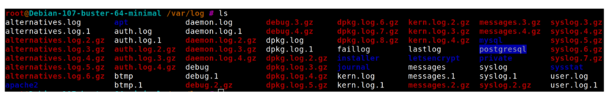

Fundamentos de Comunicação de Dados
Objetivos desta parte
- Entender como funciona a comunicação em redes locais.
- Conhecer protocolos e conceitos essenciais (Encapsulamento, ARP, MAC Address).
- Visualizar e manipular o cache ARP.
- Aprender técnicas de descoberta de hosts na rede.
- Introduzir o conceito e funcionamento do ARP Spoofing.
Ferramentas de apoio
Para auxiliar no entendimento desta aula e na execução das práticas, recomendamos o uso das seguintes ferramentas: ping, traceroute, fping, arping e netdiscover.
Essas ferramentas permitem diagnosticar conectividade, mapear redes, identificar hosts ativos e complementar a análise de pacotes e logs.
Consulte a seção Ferramentas no menu lateral para tutoriais completos de cada uma.
Encapsulamento
O encapsulamento é o processo de adicionar informações de controle (cabeçalhos e trailers) aos dados à medida que eles passam pelas camadas do modelo de rede.
Na comunicação:
1. A camada de aplicação gera os dados.
2. As camadas subsequentes adicionam informações de protocolo.
3. Na camada física, os dados são transmitidos como sinais elétricos/ópticos ou ondas de rádio.

Note
O diagrama mostra dados sendo encapsulados de cima para baixo no modelo de camadas (ex.: Aplicação → Transporte → Rede → Enlace → Física).
Protocolo ARP (Address Resolution Protocol)
- O ARP é usado para encontrar o endereço físico (MAC Address) correspondente a um endereço IP.
- Ele envia um broadcast para toda a rede local solicitando:
“Quem tem o IP X.X.X.X?” - O host que possui o IP responde com seu par IP/MAC.
Funcionamento básico:
1. Host A quer se comunicar com Host B.
2. Host A envia uma requisição ARP para toda a LAN.
3. Host B responde com seu MAC Address.
4. Host A armazena o par IP/MAC no cache ARP.
MAC Address
- Endereço físico de 48 bits, geralmente representado como seis pares hexadecimais:
54:8c:a0:df:c7:4f - É único para cada interface de rede.
- O ARP mantém um cache para evitar broadcasts desnecessários.
- Ao responder um broadcast, o host solicitante também envia seu par IP/MAC para que todos atualizem seus caches.
Visualizando o Cache ARP
Comando para visualizar:
arp -a

Descobrindo máquinas na rede
arp-scan --interface=wlp58s0 --localnet
--interface → especifica a interface de rede.
--localnet → escaneia toda a sub-rede local.
Dica
Ótimo para mapear dispositivos conectados na mesma LAN.
Ataque ARP Spoofing
Técnica de ataque que engana o cache ARP de um host. Este ataque consiste em adicionar/substituir na tabela arp da máquina alvo uma entrada que aponte um IP do alvo para o MAC Address do atacante na tabela ARP da vítima.
O atacante envia respostas ARP falsas para associar seu MAC Address ao IP de outro dispositivo (ex.: gateway). É o método mais rápido de se estabelecer no meio da comunicação entre duas máquinas e interceptar as informações enviadas entre ambas.
Isso permite interceptar, alterar ou bloquear o tráfego entre as vítimas.
Exemplo de ataque:
1. Atacante envia resposta ARP falsa ao Host A, dizendo que o IP do Gateway é o seu MAC.
2. Atacante envia resposta ARP falsa ao Gateway, dizendo que o IP do Host A é o seu MAC.
3. Agora, todo tráfego entre Host A e o Gateway passa pelo atacante.
Executando ARP Spoofing
arpspoof -i <INTERFACE> -t <IP_ALVO> <IP_GATEWAY>
-i → interface de rede usada no ataque.
-t → IP do alvo.
Último parâmetro → IP do gateway.
Atenção
- Ilegal sem autorização do dono da rede.
- Deve ser usado apenas em ambiente de testes/laboratório.
Relembrando as características do TCP e Conexões
Objetivos desta parte
- Revisar as características do protocolo TCP.
- Entender o processo de estabelecimento e finalização de conexões (Three-Way Handshake).
- Compreender o conceito de portas e sockets.
- Aprender a visualizar e interpretar conexões abertas no sistema.
Características do TCP
- Orientado à conexão (necessita handshake antes da troca de dados).
- Usa sockets para caracterizar cada conexão.
- Permite estabelecer parâmetros de qualidade de serviço e segurança.
- Negocia a conexão usando Three-Way Handshake.
- Possui mecanismos de:
- Entrega ordenada de dados.
- Detecção e retransmissão de pacotes perdidos.
- Término negociado ou abrupto.
- Sinalização de dados urgentes.
- Relato de falhas de serviço.
ü§ù Three-Way Handshake
Processo de início de conexão TCP:
- SYN – Cliente envia pedido de conexão.
- SYN-ACK – Servidor confirma recebimento e aceita conexão.
- ACK – Cliente confirma e inicia troca de dados.
Note
O diagrama mostra setas representando as três etapas da negociação (SYN → SYN-ACK → ACK) entre cliente e servidor.
üõë Encerramento de Conexão
Pode ser:
- Negociado – com troca de mensagens FIN/ACK em ambos os lados.
- Abrupto – com envio de pacote RST.

Portas TCP
A camada de transporte associa um identificador a cada processo de aplicação. Esse identificador é chamado de "Porta" ("port number").
- Identificadores numéricos usados para diferenciar serviços e processos.
- Faixa de 0 a 65535:
- 0–1023: portas conhecidas (well-known ports, ex.: 80 HTTP, 443 HTTPS, 22 SSH).
- 1024–49151: portas registradas.
- 49152–65535: portas dinâmicas/efêmeras.
Sockets
Um socket é definido pela combinação de um endereço IP e uma porta, sendo escrito sob a forma "número IP:número da porta".
Um socket provê toda a informação de endereçamento que um cliente ou um servidor necessita para identificar seu parceiro na comunicação.
- Combinação IP:Porta que identifica uma conexão.
- Exemplo:
192.168.0.11:3389 - Uma conexão TCP é identificada unicamente por dois sockets (um em cada ponta).
üîç Visualiza√ß√£o de Conex√µes e Sockets ‚Äì netstat
Para visualizar conexões de rede e sockets ativos no sistema, você pode utilizar a ferramenta netstat, localizada na aba "Ferramentas" do curso. Ela permite identificar quais portas estão em uso, quais processos estão associados a cada conexão e se há serviços em escuta (listening). Essa visão é essencial para diagnosticar problemas de conectividade, detectar conexões suspeitas e monitorar o tráfego de rede em tempo real.
Controle e Monitoramento de Portas com tcpdump
Objetivos desta parte
- Entender a importância da captura de pacotes na análise de tráfego de rede.
- Compreender o papel do tcpdump como ferramenta de auditoria e diagnóstico.
- Relacionar a captura de pacotes com a detecção de problemas e ameaças.
Por que capturar pacotes?
A captura de pacotes permite:
- Monitorar a atividade de rede em tempo real.
- Identificar padrões de tráfego legítimo e malicioso.
- Detectar incidentes de segurança, como varreduras de porta, tentativas de invasão e vazamento de dados.
- Diagnosticar problemas de desempenho, latência e conectividade.
- Validar configurações de firewall, roteamento e NAT.
O papel do tcpdump
O tcpdump é uma ferramenta que:
- Funciona diretamente no terminal, sem necessidade de interface gráfica.
- Captura pacotes que trafegam por uma interface de rede, mostrando informações do cabeçalho.
- Permite aplicar filtros para registrar apenas o tráfego de interesse.
- Gera arquivos .pcap que podem ser analisados posteriormente em ferramentas como o Wireshark.
Importante
Embora o tcpdump possa mostrar dados detalhados, nesta aula vamos focar em como interpretar as informações capturadas e entender o fluxo da comunicação, deixando a explicação aprofundada de comandos para a aba de Ferramentas.
Interpretação geral de capturas
Ao analisar capturas, fique atento a:
- Endereço IP de origem e destino.
- Portas utilizadas (pode indicar o serviço).
- Flags TCP (SYN, ACK, FIN, RST, PUSH) que indicam o estágio da conexão.
- Tamanho da janela (window size) que pode indicar ajustes de desempenho.
- Volume e frequência de pacotes para identificar comportamentos anômalos.
Aplicações práticas
Durante as aulas práticas, o tcpdump será usado para:
- Monitorar conexões durante um pentest.
- Analisar o tráfego antes, durante e depois de ataques simulados (ex.: ARP spoofing).
- Validar se regras de firewall estão bloqueando ou permitindo o tráfego como esperado.
- Coletar evidências para exercícios de análise forense.
Conexão com próximos tópicos
A captura e análise de pacotes será um ponto de transição para:
- Estudo de análise de logs.
- Compreensão de tráfego normal vs tráfego malicioso.
- Identificação de padrões de ataque que podem ser detectados tanto em capturas quanto em registros de log.
Saiba mais
Para detalhes sobre instalação, execução, filtros e exemplos de uso do tcpdump, consulte a seção Ferramentas → tcpdump no menu lateral.
Análise de Logs
Objetivos desta parte
- Entender a importância da análise de logs na segurança da informação.
- Reconhecer diferentes tipos de logs e suas aplicações.
- Saber identificar padrões e anomalias a partir de registros.
- Relacionar eventos registrados a possíveis incidentes de segurança.
O que são logs?
Logs são registros automáticos de eventos gerados por sistemas, aplicações, dispositivos de rede e ferramentas de segurança.
Eles contêm informações cruciais para:
- Auditoria – comprovar ações executadas no sistema.
- Monitoramento – acompanhar a operação de serviços e aplicações.
- Investigação – identificar causas de falhas ou incidentes de segurança.
Importância na Segurança da Informação
A análise de logs e conexões de rede é fundamental para:
- Identificar atividades maliciosas – tentativas de intrusão, execução de malware, ataques DDoS etc.
- Resolver problemas – diagnosticar falhas, quedas de serviço e gargalos.
- Otimizar desempenho – identificar padrões de uso e ajustar configurações.
- Planejamento – prever necessidade de upgrades e melhorias.
Tipos de logs
Exemplos comuns:
- Logs de firewall – conexões permitidas e bloqueadas, alertas de ataques.
- Logs de servidores web – acessos, erros HTTP, requisições suspeitas.
- Logs de servidores de aplicação – falhas internas, tempo de resposta.
- Logs de sistema operacional – autenticações, erros de hardware/software.
- Logs de IDS/IPS – detecção e bloqueio de ataques.
üìç Localiza√ß√£o dos logs no Linux
No Linux, a maioria dos logs é armazenada em /var/log/

Dentro deste diretório, cada serviço ou aplicação pode ter seu próprio arquivo de log, por exemplo:
- /var/log/syslog
- /var/log/auth.log
- /var/log/apache2/access.log
- /var/log/apache2/error.log
Interpretando logs
Ao analisar, procure:
- Padrões e tendências (ex.: acessos fora do horário habitual).
- Eventos incomuns ou suspeitos (ex.: muitos erros de autenticação).
- Tráfego suspeito (ex.: requisições repetidas para páginas não existentes).
Conexão com outras práticas
A análise de logs complementa:
- Monitoramento de pacotes (tcpdump, Wireshark).
- Configuração de firewalls (iptables, ufw).
- Sistemas de detecção de intrusão (Snort, Suricata).
Exemplos de ataques em logs de servidor web
- Tentativas de acessar
/phpmyadmin/ou/scripts/setup.php(busca por painéis administrativos). - Requisições com métodos incomuns como
PROPFIND. - Códigos de status HTTP fora do padrão esperado.
Códigos de status HTTP
- 1xx – Informações
- 2xx – Sucesso
- 3xx – Redirecionamento
- 4xx – Erro do cliente
- 5xx – Erro do servidor
Exemplo de ataque brute force SSH:
Oct 2 06:25:46 host-vps sshd[8463]: Failed password for root from 116.31.116.17 port 31142 ssh2
Oct 2 06:25:48 host-vps sshd[8463]: Failed password for root from 116.31.116.17 port 31142 ssh2
Oct 2 06:25:51 host-vps sshd[8463]: Failed password for root from 116.31.116.17 port 31142 ssh2
Oct 2 06:25:51 host-vps sshd[8463]: Received disconnect from 116.31.116.17: 11: [preauth]
Exemplo de ataque web server:
191.96.249.97 - - [20/Apr/2017:15:45:49 +0200] "GET /phpmyadmin/scripts/setup.php HTTP/1.0" 404 162 "-" "-" "-"
190.129.24.154 - - [14/Jul/2015:06:41:59 -0400] "GET /phpMyAdmin/index.php HTTP/1.1" 404 162 "-" "Python-urllib/2.6" "-"
190.129.24.154 - - [20/Apr/2017:09:04:47 +0200] "PROPFIND /webdav/ HTTP/1.1" 405 166 "-" "WEBDAV Client" "-"
180.97.106.37 - - [20/Apr/2017:04:31:02 +0200] "\x04\x01\x00P\xB4\xA3qR\x00" 400 166 "-" "-" "-"